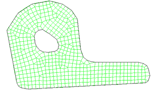
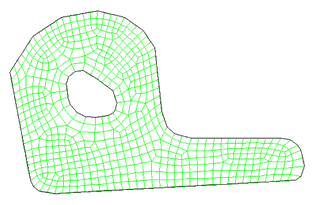

使用 2D 网格对话框中的网格划分方法选项，可以控制软件用于生成网格的算法：
使用细分网格划分方法时，软件使用递归细分技术在选定面上生成网格。使用递归细分时，软件重复进行分割，然后细分选定几何体以创建网格。使用此方法时，一旦软件生成初始单元集，便会执行一系列清理和光顺操作来提高网格的整体质量
使用铺彻法时，将铺彻方法与递归细分方法结合使用，以生成结构化程度更高的、边界合格的高质量自由网格。使用这种混合方法，软件能够在面的外边界以及任何内部洞（或“环”）周围创建结构化程度更高的网格，同时仍旧在面的其余部分生成自由网格
|

|
|

|